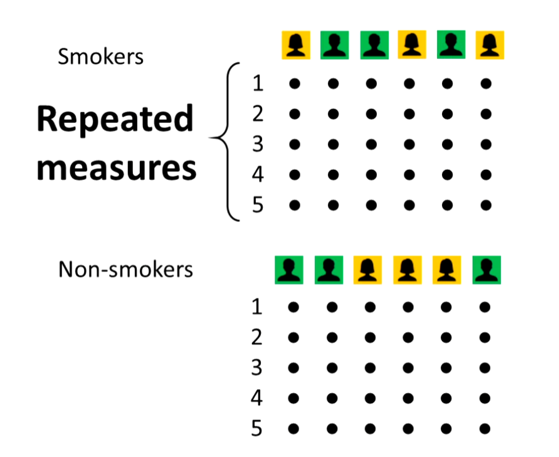
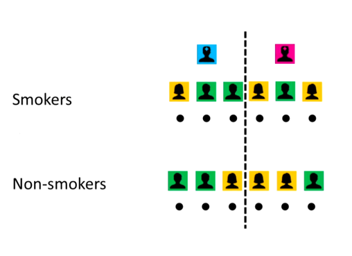
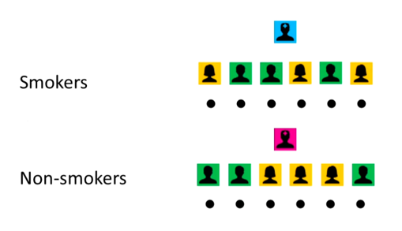

Mixed Effects Models
Introduction
Mixed effects models (also known as hierarchical or multilevel models) are a powerful statistical framework used when data is correlated or grouped in a way that violates the independence assumption of traditional statistical models. They allow us to account for both fixed effects (the main effects of interest) and random effects (the variability due to grouping factors). This makes them particularly useful in fields like psychology, education, and medicine where data is often collected from subjects that are grouped in some way
Fixed Effects
Statistical tests normally use an underlying model that describes how dependent/response variable changes as a function of one or more independent/predictor variables. For example, we might want to know how changes as a function of age. We can use a simple linear regression model to describe this relationship: \[Strength = \beta_0 + \beta_1 \cdot age + \epsilon\]
Where \(\beta_0\) is the intercept, \(\beta_1\) is the slope (effect of age on strength), and \(\epsilon\) is the error term. Our model here might be: \[Strength \textasciitilde{} N (\beta_0 + \beta_1 \cdot age, \epsilon^2)\]

This represents our hypothesis about how the world works. Here the values of the independent variable (age) represent the entire population (in which we are interested). Note, there may be other levels of age, but these are not the focus of our study.
This model assumes that all subjects are the same and does not account for individual differences i.e. independ and identiacally distributed (the famous iid assumption).
It is important to know that the wrong model reprresents the wrong world view and this will give wrong results.
In general fixed effects are the effects of interest that we want to estimate and make inferences about. They are called “fixed” because they are assumed to be the same across all levels of the random effects. For example, in a study of the effect of a drug on blood pressure, the fixed effect would be the effect of the drug, while the random effect could be the variability between subjects.
Random Effects
These account for variation that you aren’t trying to test directly but need to control for. They represent “noise” or “grouping” at different levels, such as variation between individual subjects. They are sneaky bastards!
Consider the example of studying the effects of smoking on blood pressure. We design our study and because we are not medical professionals, we get a couple of nurses to measure blood pressure on the groups of smokers and non-smokers every hour:

Here we have repeated measures. Each subject is measured multiple times (every hour). The measurements are not independent because they come from the same subject and are likely to be correlated - the value this hour is likely similar to the value the previous hour. Clearlty, this violates the independence assumption. If we ignore this and use a simple linear regression, we would bias our estimates. This is the statistically criminal act of pseudoreplication (lack of statistical independence within the data).
So suppose we average the measurements for each subject, we now have:

or we could have:

Could the differences be down to the way different nurses measure blood pressure? Because this is an effect we aren’t interested in, we can treat it as a random effect. This allows us to account for the variability between nurses without having to estimate a separate parameter for each nurse (which would be a fixed effect). We can use a mixed effects model to account for both the fixed effect of group (smoker vs non-smoker) and the random effect of nurse.
However! In the later example it is not possible to distinguish between the effect of group and the nurse because they are confounded. This is a fatal issue with the design of the study.